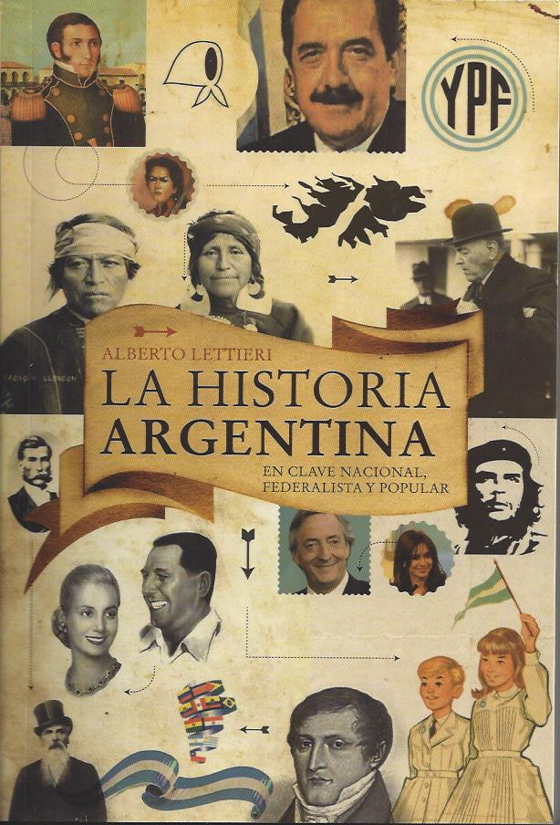

Tradiciones y costumbres
Argentina es reconocida por su diversidad cultural, expresada a través de sus tradiciones...
El mate no es solo una infusión, es un símbolo de amistad y comunidad...
El asado, preparado en parrillas o al asador criollo...
Las fiestas tradicionales como la Vendimia o el Carnaval de Gualeguaychú...
El folclore y las peñas son espacios donde se vive la música nacional...
Gastronomía
La cocina argentina se destaca por sus carnes de alta calidad, sus empanadas...
Las empanadas salteñas tienen papa y carne cortada a cuchillo...
El dulce de leche es un ícono dulce nacional...
La influencia de las migraciones se ve en platos como la pizza al molde...
Últimamente, la cocina de autor ha revalorizado ingredientes autóctonos...
Historia de Argentina
La historia argentina comienza con los pueblos originarios como los mapuches...
En 1810, la Revolución de Mayo marcó el inicio del proceso independentista...
En el siglo XIX hubo guerras civiles hasta la Constitución de 1853...
Durante el siglo XX, el país vivió etapas de prosperidad y crisis...
Desde 1983, la democracia ha marcado un camino hacia los derechos humanos...
Argentina hoy es un país vibrante y resiliente...
